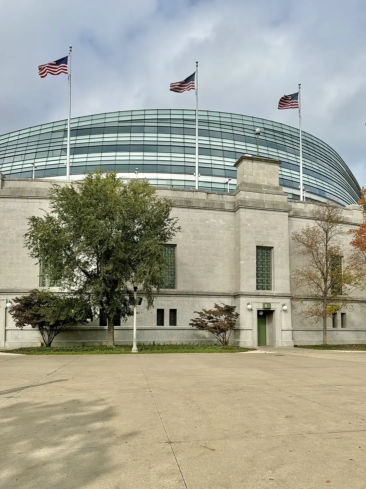
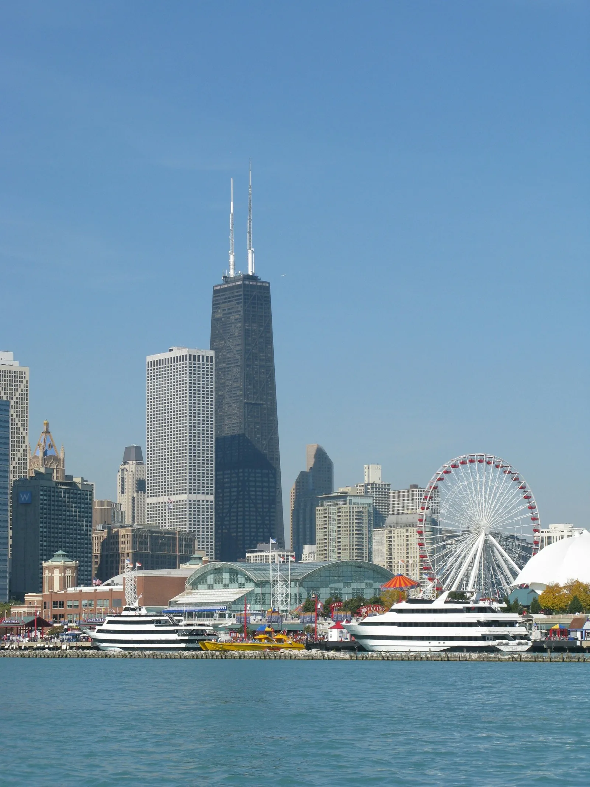
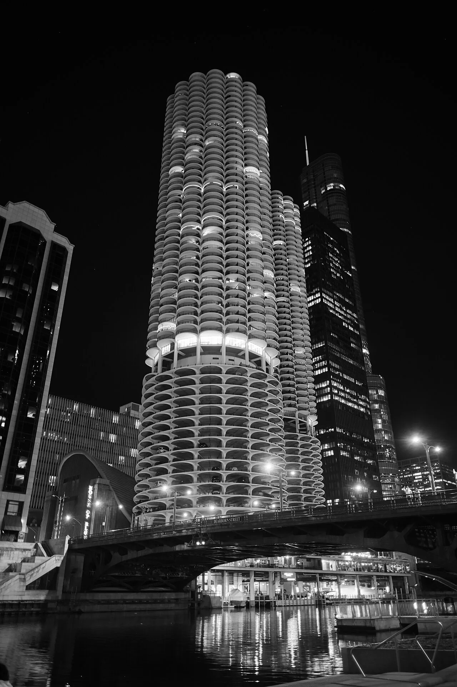

01 · Midweek
Practice fog & the wire
Facility notes, availability whispers, and the injury rail — so you know who’s warming up before the lineup graphic drops.
Built for the week that never really ends — Friday injury whispers, Sunday kickoff wind off the lake, Monday film, Wednesday practice notes. News wire, injury report, Vegas & prediction odds, live scores & schedule, player stats, roster search, and practice intel. Independent. Unofficial. Loud for Da Bears.
| Team | W | L | Pct |
|---|---|---|---|
Live from ESPN when the feed answers; otherwise your last saved snapshot.
Driven by the next kickoff when the schedule answers — otherwise a calm Midweek fallback.
Facility notes, availability whispers, and the injury rail — so you know who’s warming up before the lineup graphic drops.
Next-game countdown, NFC North watch, live board, and odds in one glance. Lake wind optional. Heart rate not.
Box scores, leaders, and the roster search stay hot long after the lights cut — ready for the next cold snap.
Grant Park after dark — the walk between the Loop and the field. Independent photography; Cold Front marks only. Never league logos.



Soldier Field on the lakefront — neoclassical stone, modern bowl, lake wind. Independent photography; Cold Front marks only. No NFL trademarks.
Chicago from the north lakefront after dark — the same water that freezes the sidelines in December. Unsplash photography; Cold Front art only.
Photos: Unsplash (incl. Navy Pier, Lincoln Park) & Wikimedia Commons (incl. Marina City) · marks: original Cold Front SVGs · see ATTRIBUTION
League feed first, then the wide wire — headlines cache on this device when a feed answers.
| Player | Pos | Injury | Status |
|---|---|---|---|
Heads up: the report table is community-maintained (see Injuries) — always cross-check with the official pregame report.
Cloud Gate throwing the skyline back at you — same downtown pulse that feeds this hub. Unsplash photography; Cold Front marks only. Never league logos.
Built by @kshot9000 — more projects and donation addresses on the About page.